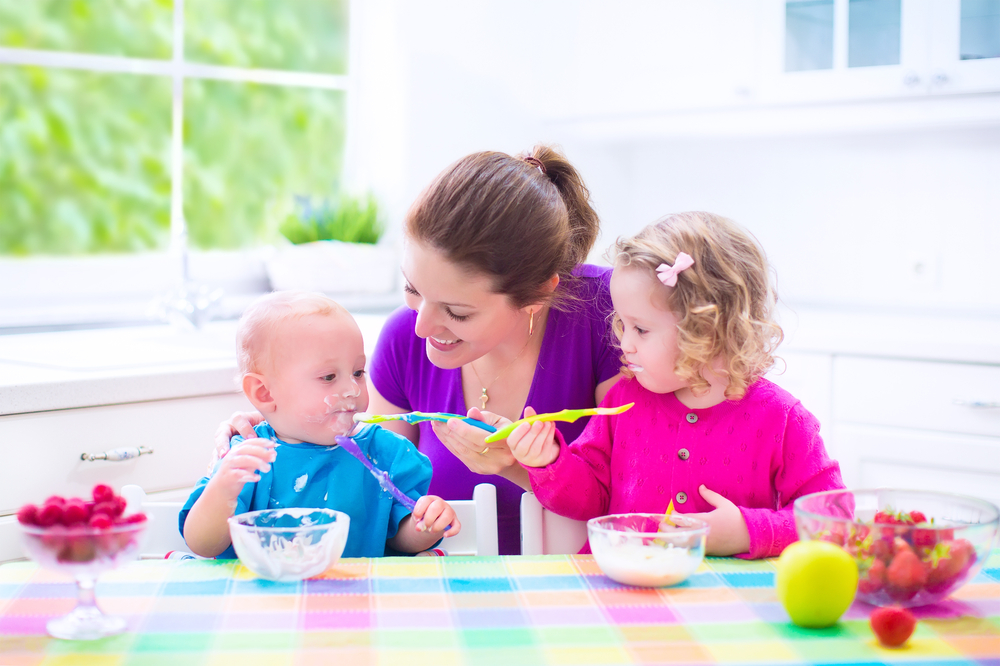
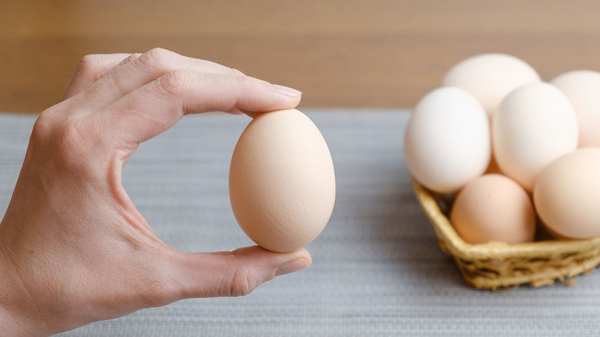
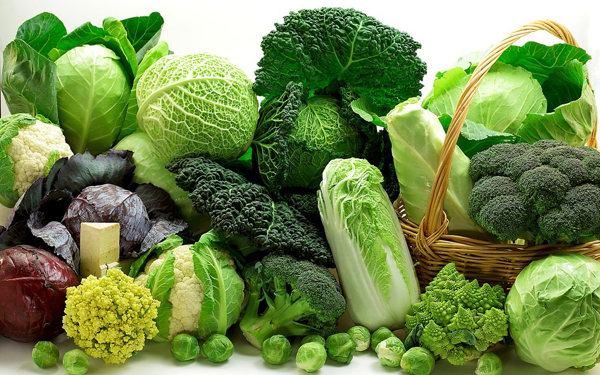

Bebeğin Zeka Gelişimine Destek Olan Besinler
Anne Sütü
Anne sütünün içerdiği omega-3 ve DHA zekanın güçlenmesinde büyük rol oynar. Hem bağışıklık güçlendirmesi hem de zeka gelişimini sağlaması açısından önemli olan anne sütündeki doymuş yağ oranının etkisi çok güçlü. Bebekler ilk 6 ay sadece anne sütüyle beslenmeli ve ek besin döneminde temel besin olarak anne sütü almaya devam etmelidir.
Yumurta
Tavuk yumurtası tüm bebeklerin gelişiminde çok önemli bir rol oynar. Protein, vitamin ve mineraller açısından en zengin gıdalardan olan yumurta, sinir sistemi ve vücut gelişimini uyarır. DHA ve lesitin içeriğiyle beyin gelişimini etkiler. Tavuk yumurtasını tercih etmenin en güçlü etkilerinden biri de bebeklerin hafızasını geliştiren kolinin bulunmasıdır.
Yeşil Sebzeler

6 aydan sonra ek gıda döneminde verilebilecek hafızayı güçlendiren ıspanak, beyin hücrelerinin gelişmesini sağlayan lahana, mineral ve vitaminlerle bezenmiş fasulye ve bezelye tüketilmesi gereken besinlerdir. Bu yiyeceklerle yapılan çorba ve pürelerle bebek zeka gelişimine katkıda bulunabilirsiniz.
Yeşil sebzelerin dışında, domates, kabak gibi sebzeler de hasarlı beyin hücrelerini onaran diğer sebzelerdir.